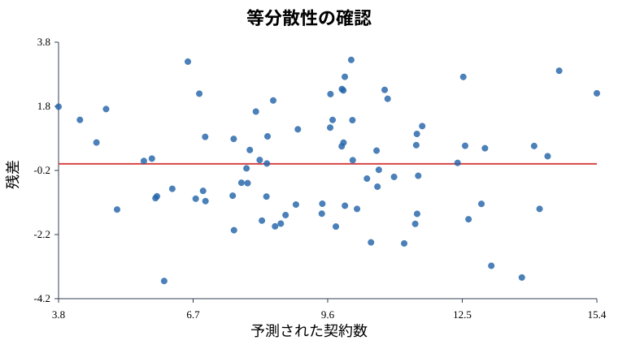
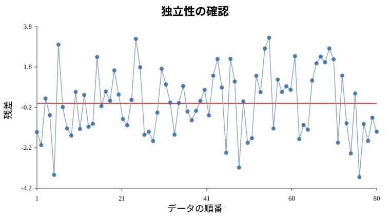
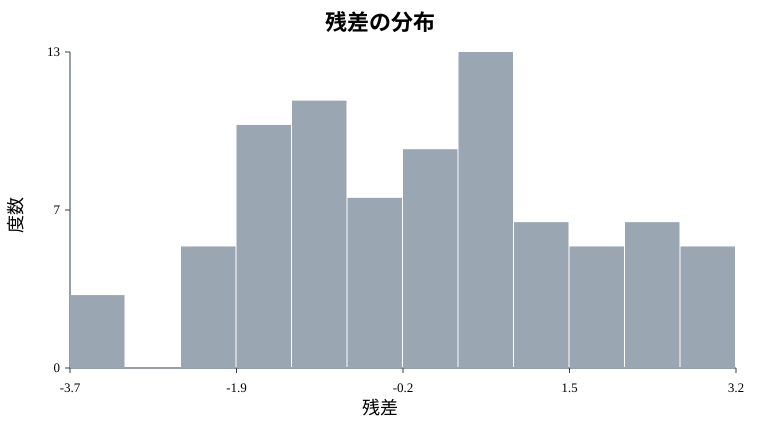
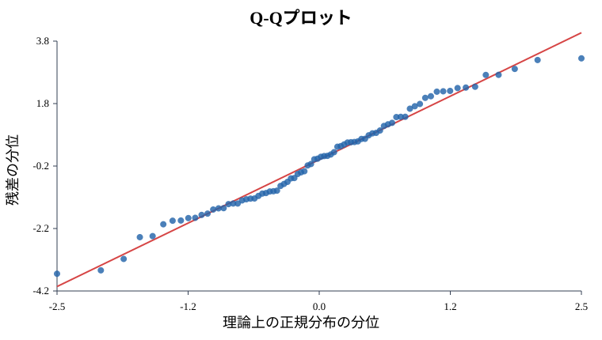

4. 回帰モデルを疑う力: 残差分析
この資料で学ぶこと
回帰分析では、モデルを作ったあとに「このモデルをどれくらい信用してよいか」を確認します。
そのときに見るのが残差です。
残差 = 実際の値 - 予測された値今回も、営業活動と契約数を例にします。
- 架電数
- 商談数
- 提案書提出数
- 契約数
モデルを作るだけなら簡単です。しかし、実務では「結果が出たから終わり」ではありません。残差を見て、モデルが変な外し方をしていないかを確認します。
この資料のゴールは、残差分析を通じて、次の3つを直感的に理解することです。
- 誤差の等分散性
- 誤差の独立性
- 誤差の正規性
A. 理論理解と説明
残差分析とは
残差分析とは、モデルの予測ミスを観察することです。
たとえば、ある営業担当者について、
予測契約数 = 5件
実際の契約数 = 7件なら、残差は次の通りです。
7 - 5 = 2残差がプラスなら、実際の契約数は予測より多いです。残差がマイナスなら、実際の契約数は予測より少ないです。
回帰モデルがうまく働いているなら、残差は0の周りにランダムに散らばります。逆に、残差に規則的な形が出るなら、モデルが何かを見落としている可能性があります。
等分散性
等分散性とは、予測値の大きさにかかわらず、残差のばらつきがだいたい同じという性質です。
営業の例なら、予測契約数が2件くらいの人でも、8件くらいの人でも、予測のズレの大きさがだいたい同じなら等分散性がありそうです。
もし、予測契約数が大きい人ほど残差のばらつきも大きくなるなら、等分散性が崩れているかもしれません。
独立性
独立性とは、あるデータの誤差が、別のデータの誤差とつながっていないという性質です。
営業の月次データでは、前月の良い流れが翌月にも残ることがあります。たとえば、大型キャンペーン中は何人もの営業担当者が同時に良い結果を出すかもしれません。
その場合、残差がランダムではなく、時系列に沿って連続してプラスになったりマイナスになったりします。
独立性が崩れていると、普通の回帰分析の標準誤差やp値をそのまま信じにくくなります。
正規性
正規性とは、残差がだいたい正規分布に近い形をしているという性質です。
正規分布は、平均の近くが多く、極端な値が少ない山型の分布です。
残差が正規分布に近いと、t検定や信頼区間の考え方を使いやすくなります。
ただし、実務データが完全な正規分布になることはほとんどありません。大事なのは、極端に歪んでいないか、外れ値が強すぎないかを見ることです。
B. 実践: Rによるモデル構築
まず、営業活動データを作ります。
set.seed(123)
n <- 80
calls <- runif(n, 40, 180)
meetings <- runif(n, 5, 35)
proposals <- runif(n, 1, 18)
contracts <- 0.5 +
0.01 * calls +
0.18 * meetings +
0.45 * proposals +
rnorm(n, 0, 1.5)
sales <- data.frame(contracts, calls, meetings, proposals)
model <- lm(contracts ~ calls + meetings + proposals, data = sales)
summary(model)予測値と残差を取り出します。
sales$predicted <- fitted(model)
sales$residual <- residuals(model)Rには、回帰診断用の基本プロットが用意されています。
par(mfrow = c(2, 2))
plot(model)
par(mfrow = c(1, 1))最初は全部を完璧に読まなくて大丈夫です。まずは「残差に変な形がないか」を見るところから始めます。
C. シミュレーションと可視化
等分散性を見る
予測値と残差の散布図を描きます。
plot(sales$predicted, sales$residual,
xlab = "予測された契約数",
ylab = "残差",
main = "等分散性の確認",
pch = 19)
abline(h = 0, col = "red", lwd = 2)
図1: 予測された契約数と残差の関係。赤い横線は残差0の基準線です。
点が0の上下にだいたい同じ幅で散らばっていれば、等分散性は大きく崩れていなさそうです。
独立性を見る
データの順番に沿って残差を見ます。営業データなら、日付順や月順で並べた残差を見るのが自然です。
plot(sales$residual, type = "b",
xlab = "データの順番",
ylab = "残差",
main = "独立性の確認")
abline(h = 0, col = "red", lwd = 2)
図2: データの順番に沿った残差の動き。赤い横線は残差0の基準線です。
残差が長くプラスに続いたり、長くマイナスに続いたりするなら、独立性に注意が必要です。
正規性を見る
残差のヒストグラムとQ-Qプロットを見ます。
hist(sales$residual,
breaks = 12,
main = "残差の分布",
xlab = "残差",
col = "gray")
qqnorm(sales$residual)
qqline(sales$residual, col = "red", lwd = 2)
図3: 残差のヒストグラム。横軸は残差、縦軸は度数です。

図4: 残差のQ-Qプロット。点が赤い直線に近いほど、正規分布に近いと見ます。
Q-Qプロットでは、点がだいたい直線に沿っていれば、残差は正規分布に近いと見ます。端の点が大きく外れている場合は、外れ値や歪みに注意します。
まとめ: この資料のオチ
回帰分析では、係数やp値だけを見て終わりにしないことが大切です。
残差分析のゴールは、モデルの失敗の仕方を見ることです。
- 等分散性: ズレの幅が予測値によって変わりすぎていないか
- 独立性: ズレが順番や時間でつながっていないか
- 正規性: ズレの分布が極端に歪んでいないか
結論として、残差分析は「モデルを信じるための儀式」ではなく、モデルを疑うための点検作業です。実務では、この疑う力があるほど、回帰分析を安全に使えます。
Check
まとめテスト
残差分析でまず見たいこととして最も近いものはどれですか？
残差が0の周りにランダムに散っているかを見ます。規則的な形があると、モデルが何かを見落としている可能性があります。